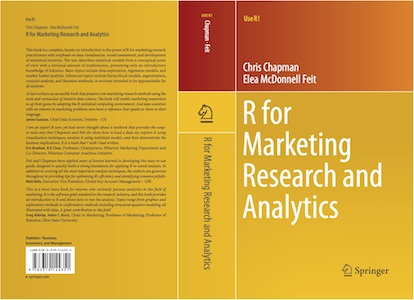

Welcome to R for Marketing Research and Analytics
R for Marketing Research and Analytics by Chris Chapman and Elea McDonnell Feit is designed to teach R to marketing practitioners and data scientists. This site contains the latest, updated .R code files; data files; and errata.

Recent Updates
| Date |
Description |
| March 16, 2016 |
Instructors: Draft slides for each chapter in the book are nearly complete and cover most of the code in the book. If you would like to use the slides for a course, please contact Elea Feit (eleafeit+bookinstructor@gmail.com) for availability. |
| November 12, 2015 |
In the October 2015 Journal of Statistical Software, Thomas Rusch (Vienna University of Economics and Business) reviewed R for Marketing Research and Analytics, concluding that the book is "a very welcome addition to the Use R! series and the marketing research and business analytics world." Full review in PDF. |
| November 1, 2015 |
A new note on the errata page discusses sign direction reversal that may appear in the summary() of variance estimates from mlogit hierarchical models (Chapter 13). This is corrected by using stdev() instead of summary(). |
| September 14, 2015 |
Slides are available from the PhillyR meetup, demonstrating choice modeling (conjoint analysis) in R. This matches Chapter 13 in the book. Slides in HTML are here; or check the complete folder with R presentation code (.Rpres), etc. |
| September 14, 2015 |
Code is available for "Rcbc 0.2" for conjoint analysis didactics and helper functions, mentioned in Chapter 13 (read the comments in the source code for documentation). Direct R code download, Rcbc 0.201. |
| August 25, 2015 |
Four minor errata are noted on the errata page. |
| August 25, 2015 |
A Chinese translation is underway. The publication date is not yet known; we will update when it is available (we expect early 2016). |
| March 14, 2015 |
The book is now available! |
{kind=link}